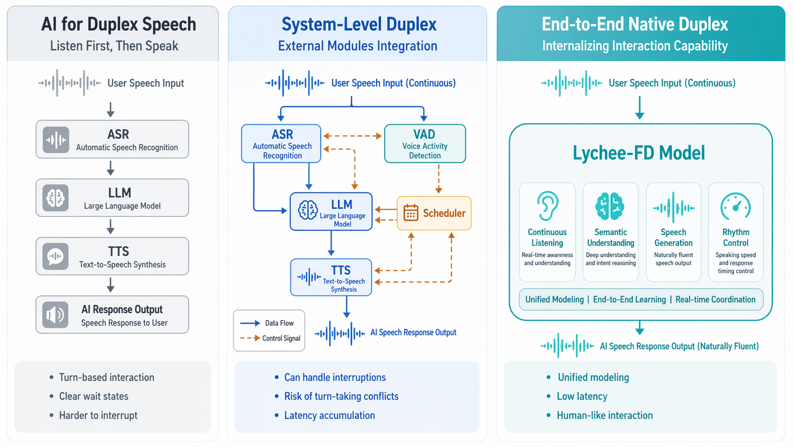

Technical blog 01 / Motivation
What is full-duplex?
Full-duplex speech interaction should be understood at two levels. At the interaction level, it moves speech AI beyond the half-duplex “listen, then speak” paradigm toward listening while speaking in a continuous audio stream. At the modeling level, native full-duplex goes beyond system-level orchestration: listening, understanding, speech generation, and interaction control are internalized within the spoken language model itself.
From turn-taking to simultaneous interaction.
Half-duplex systems listen first and speak later. Full-duplex interaction allows the model to keep listening while generating responses, so interruptions, corrections, and short feedback can be handled in a continuous speech stream.
From external orchestration to internal modeling.
System-level full-duplex stitches ASR, LLM, TTS, VAD, and schedulers together. Lychee-FD instead internalizes listening, understanding, speech generation, and rhythm control inside one end-to-end spoken language model.
